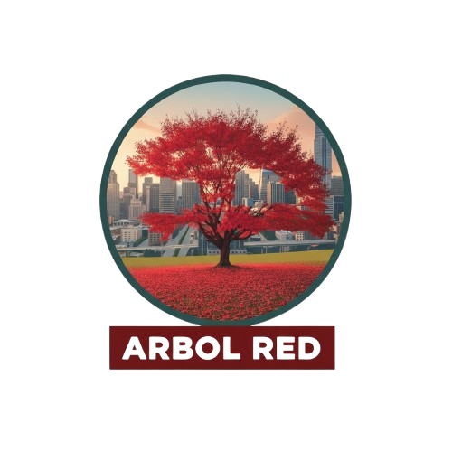

Panel de Control
Bienvenido al sistema de monitoreo inteligente del arbolado urbano
Árboles Monitoreados
1Sensores Activos
1Estado General
EstableRecursos Adicionales

App Móvil
Aplicación Móvil para Monitorear el Arbolado. Descarga nuestra aplicación para tener acceso completo a las funcionalidades de monitoreo desde tu dispositivo móvil.
Descargar desde MediaFireJuego Educativo
Juega una experiencia de Fútbol con toques de arbolado. Aprende sobre la importancia del cuidado de los árboles mientras te diviertes con este juego educativo.
Jugar en Roblox